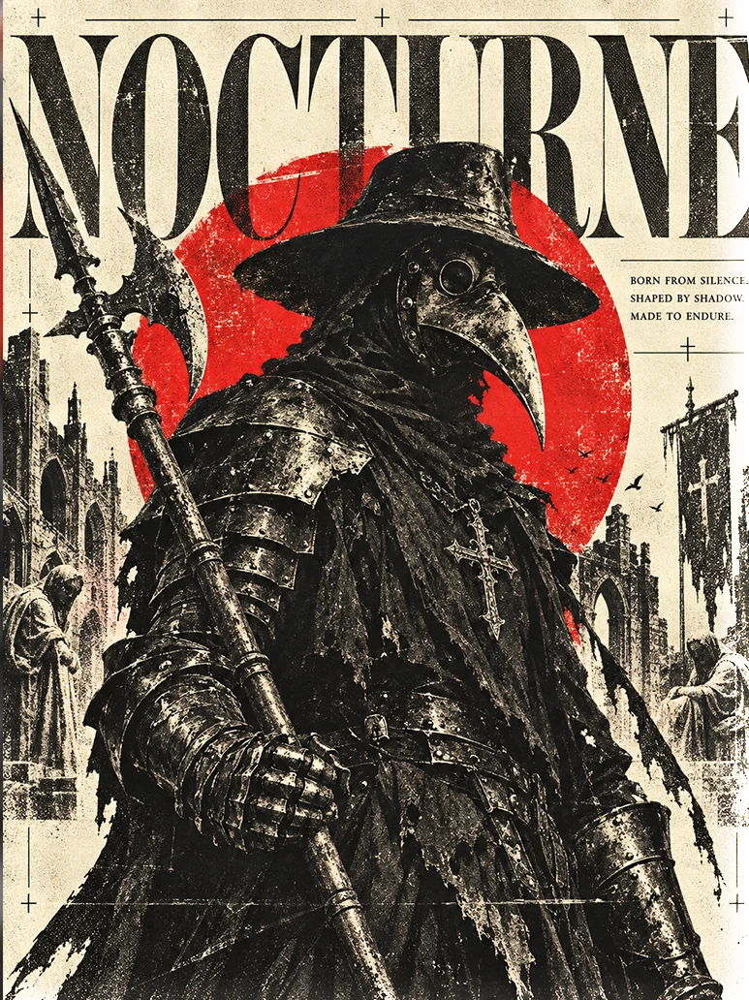
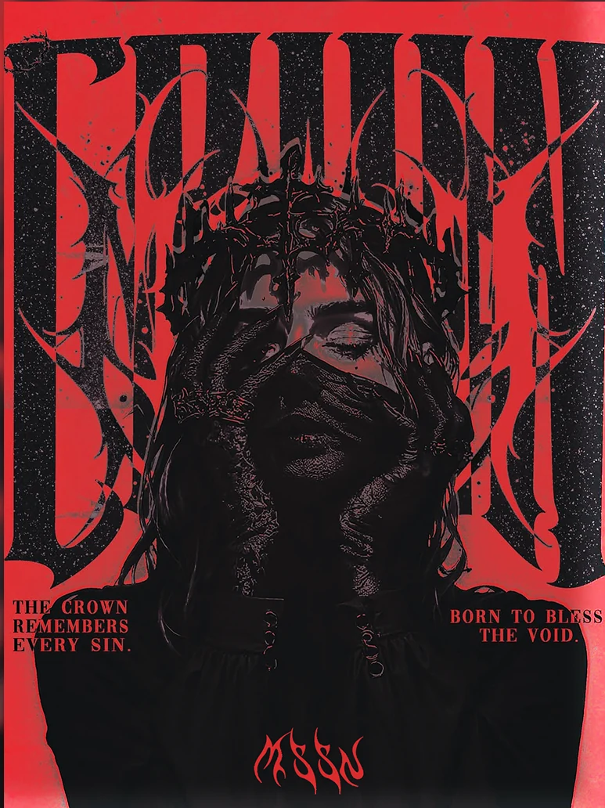
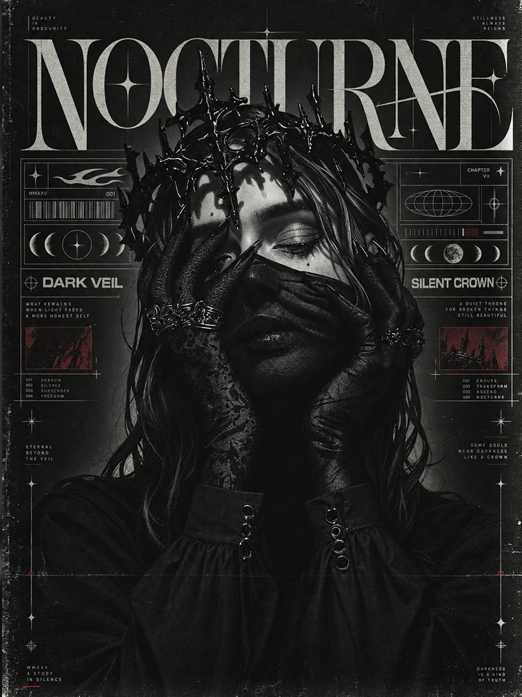

01 / Cinematic poster
GRAPHIC DESIGNER / VISUAL CREATIVE
I create cinematic visuals, bold identities and distinctive digital stories — designed to leave an impression.
Independent designer / Morocco & worldwide

01 / The selection
Twenty-one selected visual pieces, including five new cinematic artworks and two upcoming concepts. Cinematic stories, typography, character art, and brand explorations.







02 / Brand identity
Identity systems with a strong centre of gravity — from the logo through to the world around it.
Gurzil Team is a modern creative brand inspired by streetwear, gaming culture and bold visual identity.
Explore case study ↗View artwork ↓


Independent identity
03 / Motion / Digital
A playable collection of animated visual studies. Press play and stay a while.
REEL 001 / HIGHLIGHTS
A quick sequence of six original visual studies. Each clip plays for up to five seconds — no new or fabricated video assets.
READY / PRESS PLAY
04 / The archive


05 / MASSYNE — ART OBJECTS
Every finished work in the same grand glass-framed display. One consistent size, full artwork visible, and a curated museum-wall aesthetic.
20 ORIGINAL ARTWORKS / ONE SIGNATURE FRAMECinematic Medieval Poster Design
A cinematic medieval poster capturing the quiet strength of a fallen warrior beneath a blazing sunset, where endurance matters more than triumph.
Conceptual glass-framed exhibition of original MASSYNE artworks, all in the same large presentation format. No physical production or client installation is claimed.
06 / WHAT I DO
From a single statement poster to a complete visual language. These are the disciplines behind the selected work.
Cinematic compositions, expressive typography and campaign-ready creative artwork that makes the idea impossible to overlook.
EXPLORE POSTER WORKDistinct marks and cohesive graphic worlds that give a brand a recognizable personality across its visuals.
EXPLORE BRAND IDENTITYConcept-led visual direction where composition, color, subject and type tell the same story.
EXPLORE VISUAL DIRECTIONAnimated visual studies, digital movement and compelling transitions that turn static ideas into living content.
WATCH MOTION STUDIES07 / THE DESIGNER
INDEPENDENT / ART & VISUAL DESIGN
I'm MASSYNE. I turn ideas into expressive visuals that don't disappear into the scroll.
My work brings together cinematic poster composition, graphic design, visual identity and motion. I'm drawn to strong concepts, considered typography and bold artistic direction.
TOOLS & DISCIPLINES
08 / YOUR NEXT PROJECT
START SOMETHING ORIGINAL / 2026For projects, collaborations and visual ideas.
Let's build something bold together. A great idea deserves a visual identity that stands out.
START A CONVERSATION